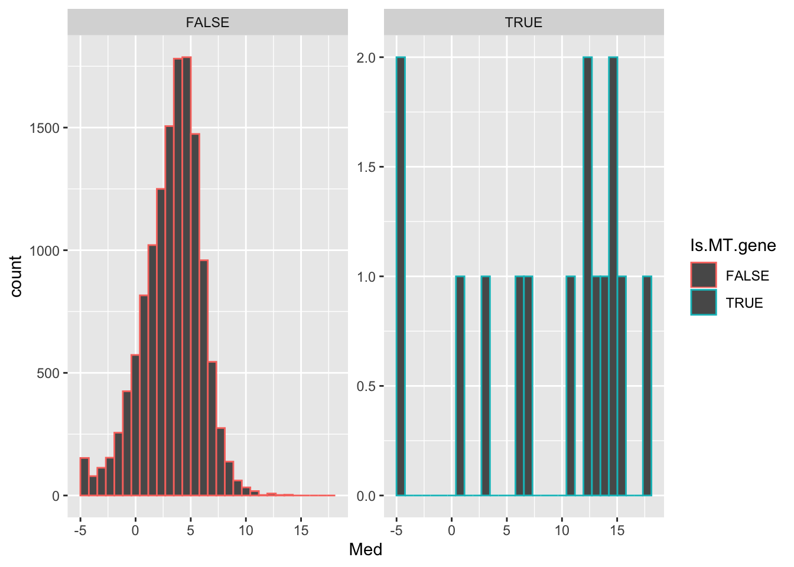
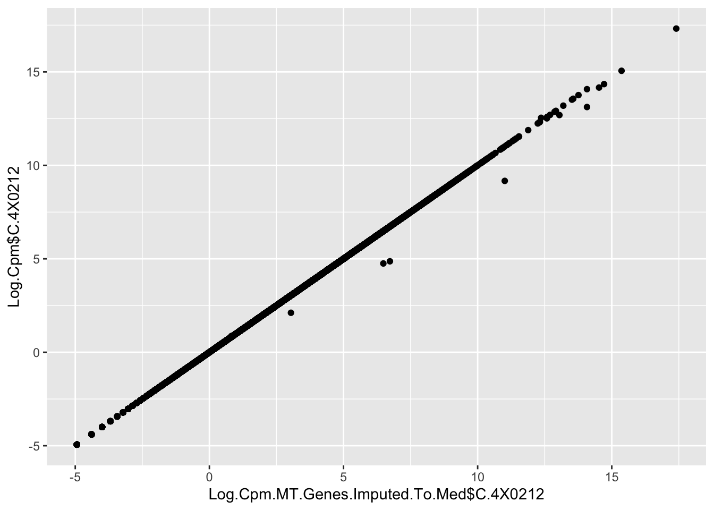
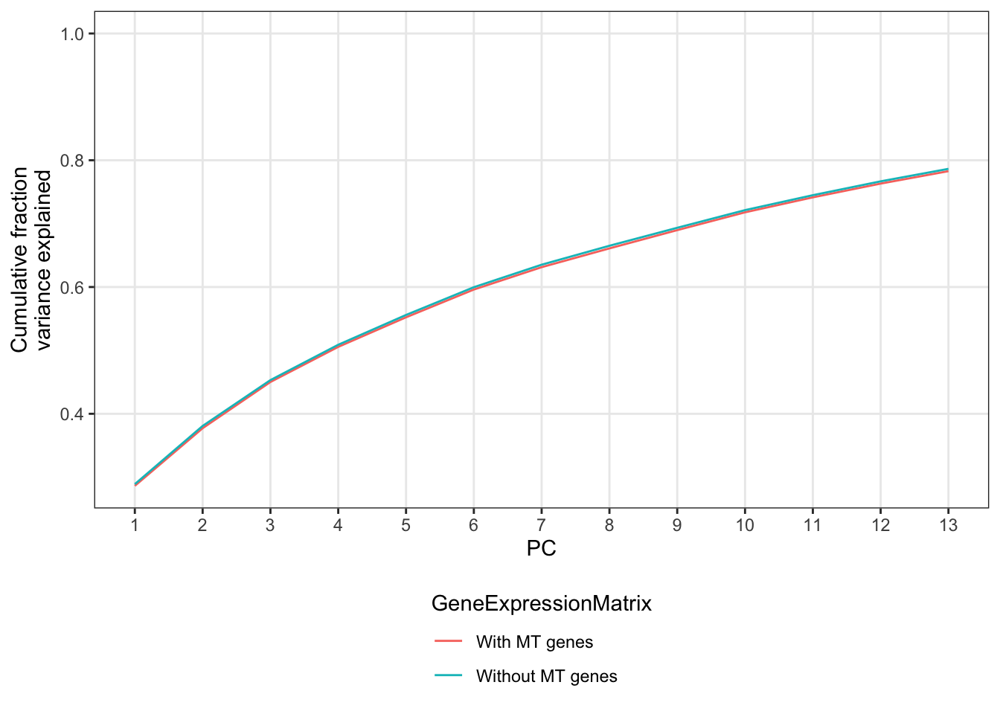

Last updated: 2020-09-23
Checks: 6 1
Knit directory: Comparative_eQTL/analysis/
This reproducible R Markdown analysis was created with workflowr (version 1.5.0). The Checks tab describes the reproducibility checks that were applied when the results were created. The Past versions tab lists the development history.
The R Markdown is untracked by Git. To know which version of the R Markdown file created these results, you’ll want to first commit it to the Git repo. If you’re still working on the analysis, you can ignore this warning. When you’re finished, you can run wflow_publish to commit the R Markdown file and build the HTML.
Great job! The global environment was empty. Objects defined in the global environment can affect the analysis in your R Markdown file in unknown ways. For reproduciblity it’s best to always run the code in an empty environment.
The command set.seed(20190319) was run prior to running the code in the R Markdown file. Setting a seed ensures that any results that rely on randomness, e.g. subsampling or permutations, are reproducible.
Great job! Recording the operating system, R version, and package versions is critical for reproducibility.
Nice! There were no cached chunks for this analysis, so you can be confident that you successfully produced the results during this run.
Great job! Using relative paths to the files within your workflowr project makes it easier to run your code on other machines.
Great! You are using Git for version control. Tracking code development and connecting the code version to the results is critical for reproducibility. The version displayed above was the version of the Git repository at the time these results were generated.
Note that you need to be careful to ensure that all relevant files for the analysis have been committed to Git prior to generating the results (you can use wflow_publish or wflow_git_commit). workflowr only checks the R Markdown file, but you know if there are other scripts or data files that it depends on. Below is the status of the Git repository when the results were generated:
Ignored files:
Ignored: .DS_Store
Ignored: .RData
Ignored: .Rhistory
Ignored: .Rproj.user/
Ignored: WorkingManuscript.zip
Ignored: WorkingManuscript/
Ignored: analysis/.DS_Store
Ignored: analysis/.Rhistory
Ignored: analysis_temp/.DS_Store
Ignored: big_data/
Ignored: code/.DS_Store
Ignored: code/snakemake_workflow/.DS_Store
Ignored: code/snakemake_workflow/.Rhistory
Ignored: data/.DS_Store
Ignored: data/PastAnalysesDataToKeep/.DS_Store
Ignored: figures/
Ignored: output/.DS_Store
Untracked files:
Untracked: analysis/20200907_Response_Point_02.Rmd
Untracked: analysis/20200907_Response_Point_04.Rmd
Untracked: data/c5.all.v7.1.symbols.gmt
Untracked: data/c5.all.v7.1.symbols.gmt.categories.tsv.gz
Untracked: data/h.all.v7.1.symbols.gmt
Unstaged changes:
Modified: analysis/20200907_Response_OriginalComments.Rmd
Modified: analysis/20200907_Response_Point_06.Rmd
Modified: analysis/20200907_Response_Point_09-2.Rmd
Modified: analysis/20200907_Response_Point_09.Rmd
Modified: analysis/20200907_Response_Point_11.Rmd
Modified: analysis/Final_2_DispersionPlots.Rmd
Modified: analysis_temp/TabulaMuris_analysis2.Rmd
Note that any generated files, e.g. HTML, png, CSS, etc., are not included in this status report because it is ok for generated content to have uncommitted changes.
There are no past versions. Publish this analysis with wflow_publish() to start tracking its development.
Original reviewer point:
The fourth test authors conducted is to show that dn/ds and pn/ps ratios of genes are correlated with gene expression variability (variance). However, because of the existence of heterogeneity of cell-type composition in samples, any correlation observed may be utterly biased by this single uncontrollable confounding factor. Furthermore, heart tissues contain an over-abundant expression of genes encoded in the mitochondrial genome. The expression level of these mt-genes may vary substantially between samples and reflect the health status of primary sample donors. PEER normalization may have to take this into account as a covariant.
First load necessary libraries for analysis…
library(tidyverse)
library(data.table)
library(knitr)
library(edgeR)
library(gplots)
source("../code/CustomFunctions.R")Now load the some input files…
First the count table as used in the original manusript…
#Get expression values for the
CountTableChimpFile <- '../output/PowerAnalysisFullCountTable.Chimp.subread.txt.gz'
CountTableHumanFile <- '../output/PowerAnalysisFullCountTable.Human.subread.txt.gz'
OutputDE <- '../output/Final/TableS2.tab'
DropFileName <- '../data/DE_SamplesToDrop.txt'
DropFile <- read.delim(DropFileName, sep='\t', col.names = c("Sample", "Species"), stringsAsFactors = F)
HumanSamplesToDrop <- DropFile %>% filter(Species=="Human") %>% pull(Sample)
ChimpSamplesToDrop <- DropFile %>% filter(Species=="Chimp") %>% pull(Sample)
DE.results <- read.delim(OutputDE, sep='\t', stringsAsFactors = F)
GeneListForOverdispersionCalculation <- DE.results$Ensembl_geneID
CountTables <- GetCountTables(CountTableChimpFile,
CountTableHumanFile,
0, GeneListForOverdispersionCalculation, ChimpSampleDrop=ChimpSamplesToDrop, HumanSampleDrop = HumanSamplesToDrop)Now a fuller count table so we can find expression values from MT genes.
FullTable <- fread("../output/STAR.RawCountTable.txt.gz")
FullTable <- FullTable %>%
separate(2, into=paste0("C.", strsplit(colnames(FullTable)[2], ' ')[[1]])) %>%
dplyr::select(-2) %>%
mutate_at(-1, as.integer)
GeneNames <- read.delim("../data/Biomart_export.Hsap.Ptro.orthologs.txt.gz")
MT.Genes <- GeneNames %>%
filter(str_detect(Chimpanzee.gene.name,pattern="^MT-")) %>%
dplyr::select(Chimpanzee.gene.name, Chimpanzee.gene.stable.ID)
#Count table of MT genes
MT.CountTable <- FullTable %>%
filter(GENE %in% MT.Genes$Chimpanzee.gene.stable.ID) %>%
column_to_rownames("GENE")
MT.CountTable %>% kable()| C.4X0212 | C.4X0267 | C.4X0333 | C.4X0339 | C.4X0354 | C.4X0357 | C.4X0550 | C.4x0025 | C.4x0043 | C.4x373 | C.4x0430 | C.4x0519 | C.4x523 | C.88A020 | C.95A014 | C.295 | C.317 | C.338 | C.389 | C.438 | C.456 | C.462 | C.476 | C.495 | C.503 | C.522 | C.529 | C.537 | C.549 | C.554 | C.554_2 | C.558 | C.570 | C.623 | C.676 | C.724 | C.Little_R | C.MD_And | |
|---|---|---|---|---|---|---|---|---|---|---|---|---|---|---|---|---|---|---|---|---|---|---|---|---|---|---|---|---|---|---|---|---|---|---|---|---|---|---|
| ENSPTRG00000042641 | 1225139 | 1395362 | 626059 | 1817795 | 1314663 | 1487905 | 1414239 | 724262 | 1117381 | 844931 | 1069735 | 1131150 | 907877 | 1386558 | 1119113 | 2671514 | 945443 | 1068457 | 1948692 | 1630818 | 1345994 | 1853598 | 2578236 | 2049414 | 1903301 | 1609196 | 1905046 | 2436447 | 2232543 | 923291 | 989955 | 1613475 | 872765 | 1255842 | 1174224 | 1322953 | 1635983 | 1313148 |
| ENSPTRG00000042626 | 595124 | 1184959 | 752864 | 1346396 | 1330544 | 999018 | 1204887 | 491613 | 920392 | 929378 | 658610 | 1006395 | 829517 | 1565618 | 472789 | 2922113 | 644442 | 717594 | 1644331 | 834599 | 790593 | 1191411 | 1430169 | 2115597 | 1230627 | 1670707 | 1786107 | 2345625 | 1314135 | 629247 | 540243 | 1507712 | 478228 | 1081295 | 531279 | 871002 | 1188400 | 901150 |
| ENSPTRG00000042642 | 0 | 0 | 0 | 0 | 0 | 0 | 0 | 0 | 0 | 0 | 0 | 0 | 0 | 0 | 0 | 0 | 0 | 0 | 0 | 0 | 0 | 0 | 0 | 0 | 0 | 0 | 0 | 0 | 0 | 0 | 0 | 0 | 0 | 0 | 0 | 0 | 0 | 0 |
| ENSPTRG00000042657 | 10919560 | 11207253 | 7621373 | 18913511 | 9783877 | 11991378 | 10591085 | 5063262 | 8021281 | 3180011 | 7576705 | 9036370 | 6778170 | 11438819 | 8809947 | 18821780 | 7776345 | 11662175 | 15657083 | 14310164 | 12434341 | 10838457 | 24634805 | 9917607 | 18374093 | 12572345 | 15123590 | 20209687 | 13005903 | 11287173 | 10533101 | 14801818 | 6833776 | 10489326 | 17177721 | 11693458 | 11372879 | 8920509 |
| ENSPTRG00000042660 | 2281051 | 2217094 | 2471250 | 4976683 | 2925848 | 3028701 | 2507750 | 1875989 | 2243275 | 1257402 | 1780727 | 1638230 | 2535655 | 2428793 | 1890506 | 5237640 | 1499587 | 2337969 | 2993579 | 2563361 | 3326678 | 2441279 | 5198371 | 3013554 | 3532133 | 2980545 | 3154789 | 6547681 | 2696388 | 1829700 | 1572366 | 3265725 | 1615535 | 2169811 | 2283633 | 2243143 | 3440372 | 2732462 |
| ENSPTRG00000042653 | 120 | 69 | 58 | 803 | 73 | 65 | 60 | 43 | 49 | 84918 | 54 | 112447 | 76 | 110 | 47 | 907 | 70 | 61 | 133 | 101 | 274 | 101 | 246 | 963 | 358 | 104 | 306149 | 331 | 120 | 77 | 95 | 148 | 68 | 558 | 91 | 150 | 95 | 49 |
| ENSPTRG00000042650 | 1948 | 894410 | 1856 | 12672 | 1257519 | 1386395 | 1104507 | 521 | 869441 | 936150 | 709 | 1015588 | 889 | 1114737 | 855 | 2116107 | 1262 | 1223 | 1313614 | 971 | 1571 | 900153 | 6123 | 884452 | 2803 | 1190496 | 2244503 | 5392 | 1198 | 2675 | 2198 | 3999 | 747 | 780231 | 1890 | 2579 | 2157 | 978152 |
| ENSPTRG00000042661 | 1797 | 491013 | 1505 | 4202 | 211135 | 663966 | 478544 | 456 | 471689 | 470307 | 557 | 589501 | 707 | 573991 | 690 | 1060849 | 928 | 1185 | 679592 | 941 | 1287 | 381282 | 3715 | 389361 | 1704 | 695032 | 1126484 | 3957 | 935 | 1519 | 7551 | 2634 | 627 | 446728 | 1182 | 2421 | 1227 | 524811 |
| ENSPTRG00000042628 | 399168 | 268875 | 300273 | 647370 | 394313 | 268190 | 335091 | 205321 | 198786 | 223935 | 294631 | 219204 | 311540 | 301228 | 253407 | 598135 | 306587 | 438166 | 331364 | 427547 | 375668 | 287757 | 713317 | 368139 | 505874 | 401212 | 278580 | 1052447 | 509227 | 268682 | 329197 | 487375 | 210474 | 262422 | 298908 | 290496 | 495081 | 312884 |
| ENSPTRG00000042631 | 390948 | 176607 | 357965 | 762341 | 179459 | 362027 | 179424 | 133679 | 219514 | 200934 | 255022 | 315252 | 275124 | 476205 | 287551 | 958120 | 400544 | 245808 | 545295 | 341233 | 345938 | 146246 | 757070 | 294020 | 658181 | 383394 | 705494 | 1003542 | 582681 | 417394 | 397242 | 730114 | 219884 | 374371 | 364539 | 417088 | 628863 | 264270 |
| ENSPTRG00000042639 | 1392110 | 1965775 | 1284030 | 3176466 | 1307718 | 2642693 | 1817170 | 665078 | 1337400 | 1166799 | 1107350 | 1745780 | 1164278 | 2092694 | 1199804 | 4856059 | 1449623 | 1011518 | 2420903 | 1544513 | 1628723 | 1351917 | 2777542 | 1999679 | 2330633 | 2281329 | 3190582 | 3301221 | 2306915 | 1439562 | 1527431 | 2274414 | 971233 | 1888972 | 1698314 | 1282767 | 2065563 | 1820314 |
| ENSPTRG00000042651 | 441717 | 783666 | 241447 | 394041 | 360707 | 420344 | 776491 | 94651 | 440235 | 247369 | 225283 | 755897 | 197704 | 1021927 | 463430 | 1252668 | 204724 | 303717 | 1059799 | 388412 | 454757 | 372984 | 925955 | 453910 | 566058 | 750072 | 857840 | 690980 | 433615 | 183957 | 260048 | 418771 | 161251 | 630265 | 253936 | 569209 | 341702 | 620303 |
| ENSPTRG00000042630 | 287 | 155145 | 152 | 269 | 55666 | 95115 | 184778 | 55 | 119504 | 29564 | 79 | 138895 | 45 | 200023 | 2708 | 133743 | 98 | 165 | 177571 | 94 | 193 | 50630 | 952 | 41034 | 186 | 125266 | 83507 | 360 | 113 | 172 | 154 | 194 | 50 | 89916 | 125 | 305 | 124 | 183474 |
| ENSPTRG00000042625 | 0 | 0 | 0 | 0 | 0 | 0 | 0 | 0 | 0 | 0 | 0 | 0 | 0 | 0 | 0 | 0 | 0 | 0 | 0 | 0 | 0 | 0 | 0 | 0 | 0 | 0 | 0 | 0 | 0 | 0 | 0 | 0 | 0 | 0 | 0 | 0 | 0 | 0 |
| ENSPTRG00000042637 | 38464 | 991272 | 24835 | 70907 | 96148 | 1334270 | 1061224 | 198674 | 734818 | 652169 | 27719 | 680740 | 33438 | 1073477 | 40952 | 2091075 | 19850 | 45846 | 1166749 | 51464 | 311207 | 128121 | 600603 | 105627 | 54572 | 861677 | 1060310 | 83196 | 67202 | 15619 | 43277 | 50951 | 27461 | 716071 | 31770 | 42275 | 47629 | 949398 |
#Add MT genes to count table, and convert to logCPM
Log.Cpm <- bind_rows(
FullTable %>%
filter(GENE %in% MT.Genes$Chimpanzee.gene.stable.ID),
CountTables$Chimp$Counts %>% rownames_to_column("GENE")
) %>%
column_to_rownames("GENE") %>%
dplyr::select(-C.4X0095) %>%
DGEList() %>%
calcNormFactors() %>% cpm(log=T) %>% as.data.frame()
#Get median expression of all genes
Median.Log.Cpm <- apply(Log.Cpm, 1, median)
#Plot median expression of all genes, and MT genes
data.frame(Med=Median.Log.Cpm) %>%
rownames_to_column("GENE") %>%
mutate(Is.MT.gene = GENE %in% MT.Genes$Chimpanzee.gene.stable.ID) %>%
ggplot(aes(x=Med, color=Is.MT.gene)) +
geom_histogram() +
facet_wrap(~Is.MT.gene, scales="free_y")
#Make "imputed" count table of MT genes based on median expression of those genes across all samples
MT.Med.Log.Cpm.df <- data.frame(Med=Median.Log.Cpm) %>%
rownames_to_column("GENE") %>%
filter(GENE %in% MT.Genes$Chimpanzee.gene.stable.ID) %>%
pull(Med) %>%
matrix(nrow = nrow(MT.CountTable),ncol = ncol(MT.CountTable)) %>%
as.data.frame(row.names = rownames(MT.CountTable))
colnames(MT.Med.Log.Cpm.df) <- colnames(Log.Cpm)
#Make count table with the MT expression from the imputed values
Log.Cpm.MT.Genes.Imputed.To.Med <- Log.Cpm %>%
as.data.frame() %>%
rownames_to_column("GENE") %>%
filter(!GENE %in% MT.Genes$Chimpanzee.gene.stable.ID) %>%
bind_rows(MT.Med.Log.Cpm.df %>% rownames_to_column("GENE")) %>%
column_to_rownames("GENE")
Log.Cpm.MT.Genes.Imputed.To.Med <- bind_rows(
MT.Med.Log.Cpm.df %>% rownames_to_column("GENE"),
Log.Cpm %>%
as.data.frame() %>%
rownames_to_column("GENE") %>%
filter(!GENE %in% MT.Genes$Chimpanzee.gene.stable.ID)
) %>%
column_to_rownames("GENE")
qplot(Log.Cpm.MT.Genes.Imputed.To.Med$C.4X0212, Log.Cpm$C.4X0212)
#PCA for both count tables
PCA.real <- Log.Cpm %>% t() %>% prcomp()
PCA.imputed <- Log.Cpm.MT.Genes.Imputed.To.Med %>% t() %>% prcomp()
summary(PCA.real)Importance of components:
PC1 PC2 PC3 PC4 PC5 PC6
Standard deviation 48.5612 27.36447 24.50734 21.36360 19.60195 18.9923
Proportion of Variance 0.2863 0.09092 0.07292 0.05542 0.04665 0.0438
Cumulative Proportion 0.2863 0.37724 0.45017 0.50558 0.55223 0.5960
PC7 PC8 PC9 PC10 PC11 PC12
Standard deviation 17.04537 15.62519 15.40365 15.21628 13.94564 13.3682
Proportion of Variance 0.03528 0.02964 0.02881 0.02811 0.02361 0.0217
Cumulative Proportion 0.63131 0.66095 0.68976 0.71787 0.74149 0.7632
PC13 PC14 PC15 PC16 PC17 PC18
Standard deviation 12.70993 12.04979 11.59453 11.16545 10.74883 10.52678
Proportion of Variance 0.01961 0.01763 0.01632 0.01514 0.01403 0.01345
Cumulative Proportion 0.78280 0.80043 0.81675 0.83189 0.84591 0.85937
PC19 PC20 PC21 PC22 PC23 PC24 PC25
Standard deviation 10.17483 9.52356 9.18588 8.96669 8.72231 8.51636 8.25668
Proportion of Variance 0.01257 0.01101 0.01025 0.00976 0.00924 0.00881 0.00828
Cumulative Proportion 0.87194 0.88295 0.89320 0.90296 0.91220 0.92100 0.92928
PC26 PC27 PC28 PC29 PC30 PC31 PC32
Standard deviation 8.17220 7.83975 7.70779 7.41979 7.09841 6.90808 6.68419
Proportion of Variance 0.00811 0.00746 0.00721 0.00668 0.00612 0.00579 0.00542
Cumulative Proportion 0.93739 0.94485 0.95206 0.95875 0.96487 0.97066 0.97609
PC33 PC34 PC35 PC36 PC37 PC38
Standard deviation 6.65103 6.39709 6.26032 6.20019 5.84560 4.751e-14
Proportion of Variance 0.00537 0.00497 0.00476 0.00467 0.00415 0.000e+00
Cumulative Proportion 0.98146 0.98642 0.99118 0.99585 1.00000 1.000e+00summary(PCA.imputed)Importance of components:
PC1 PC2 PC3 PC4 PC5 PC6
Standard deviation 48.536 27.35180 24.28489 21.31422 19.57805 18.88980
Proportion of Variance 0.289 0.09178 0.07235 0.05573 0.04702 0.04378
Cumulative Proportion 0.289 0.38079 0.45314 0.50888 0.55590 0.59968
PC7 PC8 PC9 PC10 PC11 PC12
Standard deviation 17.01909 15.60581 15.20284 15.07386 13.85255 13.34940
Proportion of Variance 0.03554 0.02988 0.02836 0.02788 0.02354 0.02186
Cumulative Proportion 0.63521 0.66509 0.69345 0.72132 0.74487 0.76673
PC13 PC14 PC15 PC16 PC17 PC18
Standard deviation 12.68231 11.96573 11.47176 11.0944 10.61526 10.29805
Proportion of Variance 0.01973 0.01757 0.01615 0.0151 0.01382 0.01301
Cumulative Proportion 0.78646 0.80403 0.82017 0.8353 0.84910 0.86211
PC19 PC20 PC21 PC22 PC23 PC24 PC25
Standard deviation 9.70311 9.43585 8.96692 8.79606 8.7052 8.44992 8.24773
Proportion of Variance 0.01155 0.01092 0.00986 0.00949 0.0093 0.00876 0.00835
Cumulative Proportion 0.87366 0.88458 0.89445 0.90394 0.9132 0.92200 0.93034
PC26 PC27 PC28 PC29 PC30 PC31 PC32
Standard deviation 7.99613 7.68151 7.6064 7.21507 7.08926 6.84747 6.67435
Proportion of Variance 0.00784 0.00724 0.0071 0.00639 0.00617 0.00575 0.00547
Cumulative Proportion 0.93819 0.94542 0.9525 0.95891 0.96507 0.97083 0.97629
PC33 PC34 PC35 PC36 PC37 PC38
Standard deviation 6.55250 6.34532 6.23390 6.13808 5.78836 4.589e-14
Proportion of Variance 0.00527 0.00494 0.00477 0.00462 0.00411 0.000e+00
Cumulative Proportion 0.98156 0.98650 0.99127 0.99589 1.00000 1.000e+00So the fraction of total variance explained by the first 10 PCs in both cases in virtually the same. I will use this to argue that the PC covariates we have already used are similarly effective at capturing cellular state. Let’s make a screeplot to show this visually.
bind_rows(
summary(PCA.real)$importance %>% t() %>% data.frame() %>% mutate(GeneExpressionMatrix="With MT genes") %>% rownames_to_column("PC"),
summary(PCA.imputed)$importance %>% t() %>% data.frame() %>% mutate(GeneExpressionMatrix="Without MT genes") %>% rownames_to_column("PC")) %>%
mutate(PC=as.numeric(PC)) %>%
ggplot(aes(x=PC, y=Cumulative.Proportion, color=GeneExpressionMatrix)) +
geom_line() +
ylab("Cumulative fraction\nvariance explained") +
scale_x_continuous(breaks=1:13, limits = c(1,13)) +
scale_color_discrete(guide = guide_legend(title.position = "top", nrow = 2)) +
theme_bw() +
theme(panel.grid.minor = element_blank(), legend.position = "bottom")
And write out the plot…
ggsave("../figures/OriginalArt/ResponseToReviewers.MT.PCA.pdf", height=3, width=3)
sessionInfo()R version 3.6.1 (2019-07-05)
Platform: x86_64-apple-darwin15.6.0 (64-bit)
Running under: macOS Catalina 10.15.5
Matrix products: default
BLAS: /Library/Frameworks/R.framework/Versions/3.6/Resources/lib/libRblas.0.dylib
LAPACK: /Library/Frameworks/R.framework/Versions/3.6/Resources/lib/libRlapack.dylib
locale:
[1] en_US.UTF-8/en_US.UTF-8/en_US.UTF-8/C/en_US.UTF-8/en_US.UTF-8
attached base packages:
[1] stats graphics grDevices utils datasets methods base
other attached packages:
[1] cowplot_1.0.0 gridExtra_2.3 MASS_7.3-51.4 gplots_3.0.1.1
[5] edgeR_3.26.8 limma_3.40.6 knitr_1.26 data.table_1.12.8
[9] forcats_0.4.0 stringr_1.4.0 dplyr_0.8.3 purrr_0.3.3
[13] readr_1.3.1 tidyr_1.0.0 tibble_2.1.3 ggplot2_3.2.1
[17] tidyverse_1.3.0
loaded via a namespace (and not attached):
[1] httr_1.4.1 jsonlite_1.6 R.utils_2.9.0 modelr_0.1.5
[5] gtools_3.8.1 assertthat_0.2.1 highr_0.8 cellranger_1.1.0
[9] yaml_2.2.0 pillar_1.4.2 backports_1.1.5 lattice_0.20-38
[13] glue_1.3.1 digest_0.6.23 promises_1.1.0 rvest_0.3.5
[17] colorspace_1.4-1 htmltools_0.4.0 httpuv_1.5.2 R.oo_1.23.0
[21] pkgconfig_2.0.3 broom_0.5.2 haven_2.2.0 scales_1.1.0
[25] gdata_2.18.0 later_1.0.0 git2r_0.26.1 generics_0.0.2
[29] farver_2.0.1 ellipsis_0.3.0 withr_2.1.2 lazyeval_0.2.2
[33] cli_2.0.0 magrittr_1.5 crayon_1.3.4 readxl_1.3.1
[37] evaluate_0.14 R.methodsS3_1.7.1 fs_1.3.1 fansi_0.4.0
[41] nlme_3.1-143 xml2_1.2.2 tools_3.6.1 hms_0.5.2
[45] lifecycle_0.1.0 munsell_0.5.0 reprex_0.3.0 locfit_1.5-9.1
[49] compiler_3.6.1 caTools_1.17.1.3 rlang_0.4.1 grid_3.6.1
[53] rstudioapi_0.10 bitops_1.0-6 labeling_0.3 rmarkdown_1.18
[57] gtable_0.3.0 DBI_1.0.0 R6_2.4.1 lubridate_1.7.4
[61] zeallot_0.1.0 workflowr_1.5.0 rprojroot_1.3-2 KernSmooth_2.23-16
[65] stringi_1.4.3 Rcpp_1.0.5 vctrs_0.2.0 dbplyr_1.4.2
[69] tidyselect_0.2.5 xfun_0.11